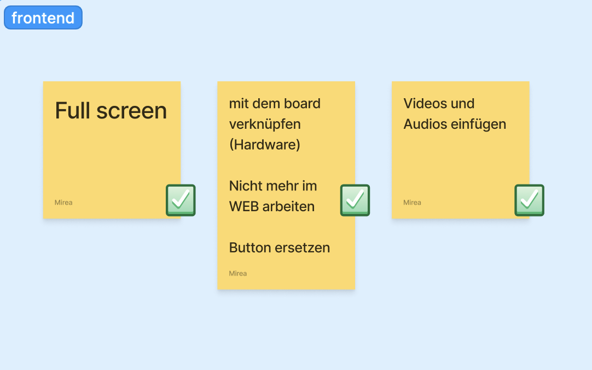

With our final group project we summed up what we have learned during the semester. After some discussion we came to the conclusion that we are making a small indi game in real life. The plot of the game is as follows: the player needs to get to the kitchen to make themselves a sandwich, without waking up their angry sleeping monster uncle. If player wakes up the uncle, they lose.
We divided into groups to distribute the work. Some of us were responsible for the design, some were involved in hadrware and physical building. I was in the frontend team.
Although the following code was not used for the final version of the game, I'd still love to devote some time of my documentation to it. In this project I used sound as an input. When received by the device sound exceeded a certain value, the picture on the screen was replaced by a jumpscare.
However, for the project we decided to use physical interaction as an input. That means that we created a button based mechanism that is triggered when pressed. In this way, we could combine the work of those who were responsible for displaying the picture on the screen and those who made possible phisical interaction with the player.
The initial stages of work took place within my team. We learned how to add video to the code, launch it by pressing a certain key, chose sounds for different phases of the game.
After all the efforts, work on our project has finally come to an end. We managed to put all the teamwork together and made the game work as planned. The only thing left is to wait for our presentation ;)
While working on our project, I understood the importance of teamwork, especially for programming. When a team works together, tasks can be divided based on each member's strengths. This helps in completing the project more quickly and efficiently.
Programming can be challenging, and having a team provides emotional support and motivation. Team members can encourage each other during tough times and celebrate successes together.